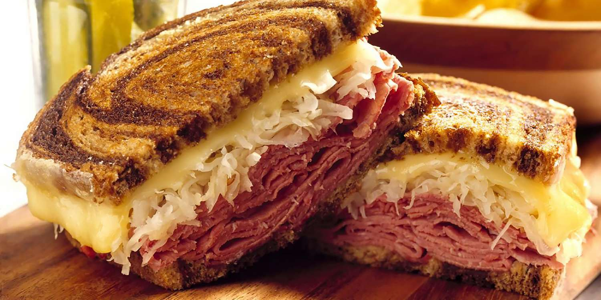

Reuben Sandwich

A reuben sandwich
a reuben sandwich made from corned beef on rye bread. look bellow for a list of ingredients and steps.
Ingredients:
- 8 slices rye beard
- 1/2 cup Thousand Island Dressing
- 8 slices Swiss cheese
- 8 slices deli sliced corned beef
- 1 cup sauerkraut, drained
- 2 tablespoons butter, softened
Steps
preheat large skiller.
Spread on one side of bread slices evenly with Thousandisland dressing.
on four slices layer one slice cheese, 2 slices corned beef, 1/4 cup sauerkraut, and a second slice of cheese.
top with remaining bread.
place sandwiches butter side down on the skittle, butter the top and grill until both sides are golden brown.